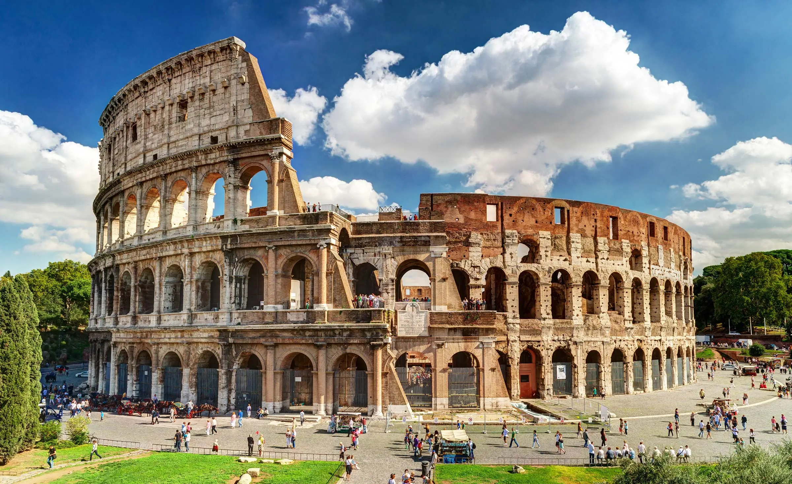

Historia y Cultura de Roma
Descubre el alma eterna de la Ciudad Eterna

¿Te has preguntado alguna vez por qué Roma atrae a millones de visitantes cada año? La respuesta está en su historia única, su cultura viva y su encanto eterno. Roma no es solo un destino, es una experiencia que combina pasado, arte, fe y sabor.
Un viaje al pasado: la historia de Roma
Roma nació hace más de 2,700 años. Según la leyenda, fue fundada por Rómulo en el año 753 a.C., y desde entonces su historia ha sido una aventura increíble. Fue primero un pequeño pueblo, luego se convirtió en la capital del mayor imperio del mundo antiguo.
Caminar por sus calles es como recorrer un museo al aire libre: el Coliseo, el Foro Romano y el Panteón son solo algunas de las huellas del poder de la antigua Roma. Cada piedra tiene una historia que contar, y cada rincón guarda secretos de emperadores, gladiadores y dioses.
“La historia de Roma abarca más de mil años, durante los cuales pasó de ser una monarquía a convertirse en una república y luego en un imperio que dominó gran parte del mundo conocido.”
Wikipedia - Antigua Roma
Cultura viva en cada rincón
Lo maravilloso de Roma es que su cultura no se quedó en el pasado. Hoy, la ciudad sigue vibrando con arte, tradición y vida cotidiana. La herencia del imperio se mezcla con el bullicio de los mercados, los artistas callejeros y las trattorias llenas de aromas.
Roma heredó muchas ideas y estilos de los antiguos griegos, pero supo darle su propio toque. De ahí nacieron los arcos, las grandes avenidas, los baños públicos y las leyes que hoy aún influyen en muchos países.
“Los romanos se beneficiaron enormemente del contacto con la cultura griega, que admiraban profundamente. Sin embargo, desarrollaron una cultura propia, centrada en la práctica y la organización.”
El Historiador
Fe, arte y tradición
En Roma, la religión siempre ha sido parte de la vida. Primero con sus dioses antiguos, y luego con la llegada del cristianismo, que hizo de esta ciudad el corazón espiritual del mundo católico. La Basílica de San Pedro y el Vaticano son testigos vivos de esa historia de fe y arte.
“En el siglo IV, el cristianismo fue adoptado oficialmente por el emperador Constantino y se convirtió en religión del Estado.”
Wikipedia - Antigua Roma
Fuentes:
Wikipedia - Antigua Roma,
El Historiador.